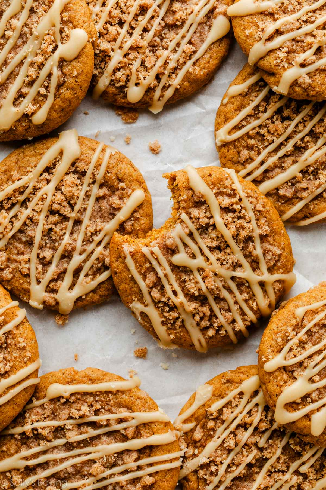

Home
Pumpkin Crumb Cake Cookies

Description
A soft and chewy pumpkin cookie cradles a buttery, spiced crumb topping, and a dash of pure maple flavor seals
the deal: this will be your new favorite fall cookie!
Ingredients
Cookies
- 1 cup (226g) canned pumpkin puree
- 2 and 1/4 cups (281g) all-purpose flour (spooned & leveled)
- 3/4 teaspoon baking soda
- 2 teaspoons store-bought or homemade pumpkin pie spice*
- 1 teaspoon ground cinnamon
- 1/2 teaspoon salt
- 3/4 cup (12 Tbsp; 170g) unsalted butter, melted and cooled for 5 minutes
- 2/3 cup (133g) light or dark brown sugar
- 1/2 cup (100g) granulated sugar
- 2 Tablespoons (30g/ml) pure maple syrup
- 1 egg yolk, at room temperature
- 1 teaspoon pure vanilla extract
- Crumb Topping
- 1/2 cup (63g) all-purpose flour (spooned & leveled)
- 1/3 cup (67g) light or dark brown sugar
- 1 and 1/2 teaspoons store-bought or homemade pumpkin pie spice*>
- 4 Tablespoons (56g) unsalted butter, softened to room temperature
Maple Icing
- 2 Tablespoons (28g) unsalted butter
- 1/3 cup (80g/ml) pure maple syrup
- 1 cup (112g) sifted confectioners sugar
- pinch salt, to taste
Steps
-
Blot the pumpkin: Line a medium bowl with several paper towels. Place the pumpkin puree in the bowl. Using
another
paper towel, press down to blot excess moisture out of the pumpkin. Repeat with new paper towels until the
pumpkin
feels much drier and has been reduced by half, to 1/2 cup (113g). Set aside.
-
Make the cookies: In a medium bowl, whisk together the flour, baking soda, pumpkin pie spice, cinnamon, and
salt.
Set aside.
-
In a large bowl, whisk together the melted butter, granulated sugar, brown sugar, and maple syrup until
combined.
Whisk in the egg yolk and vanilla extract until incorporated, then whisk in the 1/2 cup of blotted pumpkin.
Pour
the
dry ingredients into the wet ingredients and stir with a silicone spatula or wooden spoon until combined.
The
cookie dough will be very soft.
- Cover tightly and refrigerate the cookie dough for at least 2 hours or up to 3 days.
-
Make the crumb topping: Meanwhile, in a small bowl, whisk together the flour, brown sugar, and pumpkin pie
spice.
Using a fork or a handheld mixer on low speed, mix in the butter until sandy and crumbly.
Feel free to work the mixture together with your hands if it’s not coming together. Place the topping in the
refrigerator or freezer until needed in step 7.
- Preheat the oven to 350°F (177°C). Line large baking sheets with parchment paper or silicone baking mats.
-
Scoop and roll the chilled cookie dough into balls, about 1.5 Tbsp (35g) of dough each, and arrange 3 inches
apart
on the prepared baking sheets. Use your thumb to press a few indents into the middle of each cookie, to make
a
shallow bowl shape. Sprinkle a generous amount of the cold crumb topping on top of each cookie.
-
Bake for 14–15 minutes or until the edges of the cookies are lightly browned and set. Cool the cookies on
the
baking
sheet for 10 minutes, then transfer them to a cooling rack.
-
Make the icing: In a small saucepan over low heat, melt the butter and maple syrup together, whisking
occasionally.
Once the butter has melted, remove from heat and whisk in the sifted confectioners’ sugar. Taste. Add a
pinch of
salt, if desired. Drizzle over cookies. Icing will set after about 1 hour.
-
Store cookies in an airtight container at room temperature for up to 4 days, or in the refrigerator for up
to 1
week.